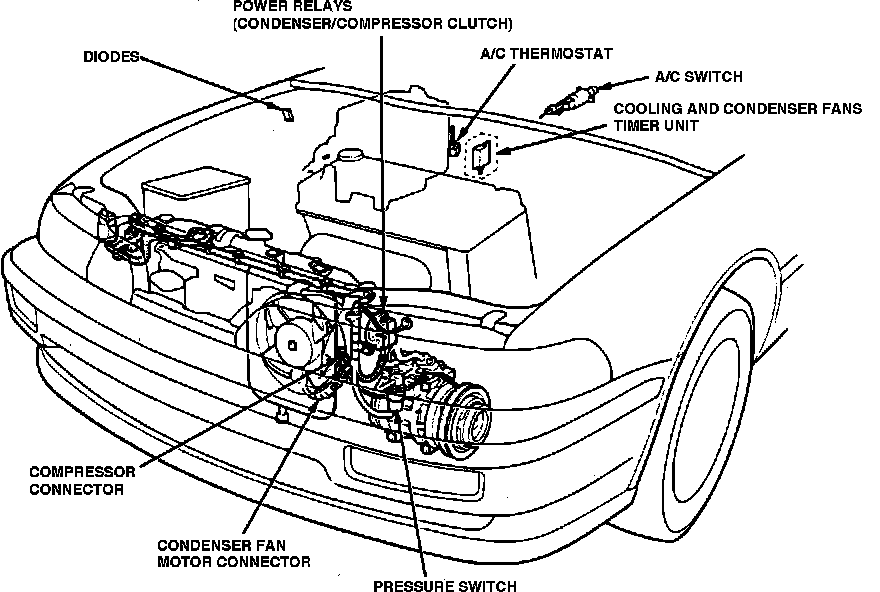

Operation CHARM
: Car repair manuals for everyone.
Home
>>
Acura
>>
1992
>>
Integra L4-1834cc 1.8L DOHC FI
>>
Repair and Diagnosis
>>
Engine, Cooling and Exhaust
>>
Cooling System
>>
Radiator Cooling Fan
>>
Radiator Cooling Fan Control Module
>>
Locations
>>
Fan Timer Relay
Fan Timer Relay
A/C System Components:

Behind Center Of I/P